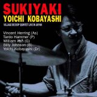
2002.08.29 河内スタヂオ録音
Sukiyaki
Village Be Bop Quintet(ライブ録音)Vincent Herring (as) / Tardo Hammer (p) / William Ash (g) / Billy Johnson (b) / 小林陽一 (ds)
「エンジニアが運営するスタジオでのライブというのも成功の決め手か。」スイングジャーナル 2002年12月号 録音評
About the Album
作品紹介
「SUKIYAKI」
日本を代表する名ドラマー小林陽一が、アルトのヴィンセント・ハーリングをフィチャー。02年のジャパン・ツアーでの熱気がよみがえる河内スタヂオでのライブ盤
Village Be Bop Quintet
, Yoichi Kobayashi feu: Vincent Herring
Vincent Herring(As) Tardo Hammer(P)
Billy Johnson(B) William Ash(G) Yoichi Kobayashi (Dr) ￥2,800
（CD代、税込み）
購入先はこちら小林陽一HP>>>CDショップ
1♪CONVICTION (Tardo Hammer) 2,SUKIYAKI (Hachidai Nakamura) 3,CARAVAN (Duke Ellington)
4,IN A CENTIMENTAL MOOD (Duke Ellington) 5,TOMORROW IS THE DATE? (Yoichi Kobayashi)
6,SWEET AND LOVELY (Gus Arnhein,Harry Tobias,Ules Lemare) 7,DAY DREAM (Duke Ellington)
8,Bill’s GRO0VE (William Ash) TOTAL/64:40
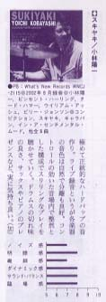
スイングジャーナル2002年12月号 録音評で
今月のベスト・アルバムに選ばれました。
★★★★
◆極めて正統的なハードバップの音作り。ライブ録音というが、各楽器の
音色は自然で分離も良好。コントロールの効いた音場内で整然とした構成
でスリリングなプレイを聴かせていく。
ドラムスの切れ味の良さ、サックスやピアノのプレゼンスなど、実に気持ちよい
◆ジャズの音と言っても洋々な方向性があって、演奏者、制作陣、録音技術者と、
それぞれの思いのコラボレーションの上に最もふさわしい音に収斂していくのだろう。
本作はそうした音作りの原点を感じさせる。
ハードバップに真っ向から取り組んだ演奏に、正攻法の音作りで望んだ技術者陣の
意気込みが見えてくる。
音作りには多くの選択肢があるだろうが、あえてストレートにまとめて成果をあげて
いる。エンジニアが運営するスタジオでのライブというのも成功の決め手か・・・。
（加藤）
スイングジャーナル 2002年12月号「11月の新譜 録音評」 より
Recording Report
レコーディングレポート
Villege Be Bop Quintet
ライブ・レコーディング
レコーディングレポート8/29 2002
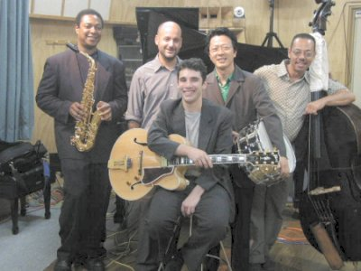
スイングジャーナル2002年12月号 録音評で今月のベスト・アルバムに選ばれました。
３月頃だったと思うが、モンキーさん（小林陽一）から電話があり「ビンセントのグループと東北ツアーをするんだけど河内さんちのスタジオでLive Recording してくれない？」との電話、
私は昔からビンセントのファンで機会があれば一度自分でも録音してみたいと思っていたので迷わずOKしてしまった。
お客さんがいるライブレコーディングは昔スタジオを作る前はずいぶんやったのだけど、プライベート録音と違い失敗は許されない。 しかもビンセントのグループだし・・結構プレッシャーを感じてしまった。
ライブレコーディングはお客さんがいるので、やる方も一気に演奏するし、こっちも「ちょっとまった！」なんてこともできないし、「今のもう一回やって」なんてのもできない。
５人のバンドなのでけっこうの数のマイクも立てるのでトラブルのないように、しっかりチェックしなければいけない。
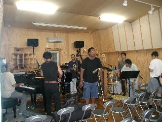
マイクをセッティング
録音の２日くらい前からマイクをセッティングして、チェックをすることにした。でもマイスタジオなので、どっかのライブハウスでその日にセッティングして録音ていうのから考えたら夢みたいな話だ。
万全の体制で８月２９日をむかえた。
当日１時頃に小林陽一がメンバーを連れてスタジオにやってきた。
録音する側から言えばPAはない方がやりやすいけど、Liveを聴きに来たお客さんにはいいバランスで（でもできるだけ電気の拡声はない方がいい）聴いていただきたいのでPAも用意した。
サウンドチェックでとりあえずPA無しでやってみたらけっこうバランスよくきこえたのですべて生でやることにした。
７時より演奏が始まると Vincent Herringのあの湯水のごとく出てくるフレ－ズ、スピード感に圧倒された。
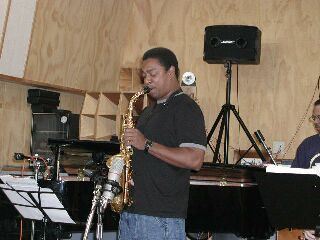
Vincent Herring（As） ビンセント・ハーリング
ナッドアダレイのバンドで長く活躍。
「Good Fellas」 「Secret Love」 「Change The World」
98年には「Early On」 99年には、Joe Chanbersのメンバーで
ブルーノートから「Mirrors」に参加、など数多くのCDが話題になっている。
現在は自己のカルテットで各国でツアー中。日本でも人気が高い。
小林とのユニットでは6度目の来日。
キャノンボール、コルトレーンを彷彿し、バップ路線としては若手No.1アルトサックス
ギターの William Ash は短音のソロもほとんど親指だけで弾くWes派の正統派ギタリスト。私はピックを使わないジャズギタリストは宮之上さん以外で初めて見た、こういう奏法のギターは宮之上さんでなれてるのでやりやすかった。
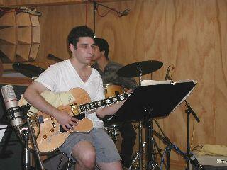
Willian Ash (G) ウイリアムアッシュ
NY, ブルックリン出身。17才で天才ギタリストとして
プロ活動に入る。
C.Sharpe, Jr.Cook, Roy Hargrove, Barry Harris,
Jimmy Lovelace等のバンドで活躍。現在、スモールズで
レギュラー出演中。キングレコード企画のギタリスト7人の
「プロジェクトG7」にも参加 02年「Heart Willian Ash」を
ポリスターから発表した。
ピアノのTard Hammer はとってもテクニカルでバリーハリス派のピアニスト
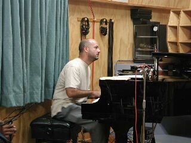
Tardo Hammer (p) タード・ハマー
NY生まれ。
Charlie Rouse,LouDonaldson, Art Farmer,Abbey
Lincoin, Jon Hendricks, Chris Conner等と活躍
自己の「Opera House」でも活躍
Annie Rossのアルバムにも参加。
L.A.タイムスのZen Stewart氏から絶賛をあびる。
バップ系ピアニスト。92年グッド・フェローズ2にも参加している。
ベースのBilly Johnson はドラムのMark Johnsonのお兄さんでスピードのあるすばらしいベースだ、音も大きいし録音しやすかった。（Live録音の場合たいていドラムの横で弾くので小さく弾かれると生の音で録音しにくくなるのです）
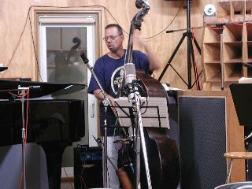
Billy Jhonson (B) ビリー・ジョンソン
ミルウォーキー出身
Abby Lincoln, Loonel Hampton, Abraham
Burton, Wallace Roney, Illonois Jacquet,
Arthur Tailor’s Whaler, Ceri Arren ,等のバ
ンドで活躍。98年には弟のMark Jhonson(ds)と
Philip Hrper, Mark Whitfield とJapan Tour を行っている。
小林のユニットでは2度目の来日
ドラムのモンキーさんこと小林陽一は秋田の誇る和製ブレイキーで私の好きなドラマーだ。
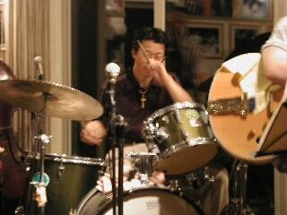
Yoichi Kobayashi （Dr.) 小林陽一
2000年にNYのアート・ブレーキー・レガシーコンサートに招待され出演
その時制作した 「Autum In New York」
「Village Be Bop」で通算14枚目のアルバムを発表
01年でクインテット25周年を迎え、S.J.誌コンボ部門で5位に入る。
演奏が始まると音に集中していてあっという間に終わった感じがした。
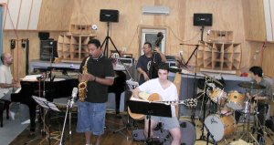
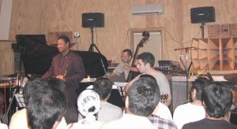
ゆっくり聴けなかった演奏も終わってプレイバックを聴くとすばらしい演奏に,またまた感激してしまった。
前回の北村さん＆世良さんのレコーディングや今回のレコーディングで,
こんな世界的なミュージシャンが大潟村の河内スタヂオで録音して自分でもすごいスタジオを作ってしまったと思ってしまった。